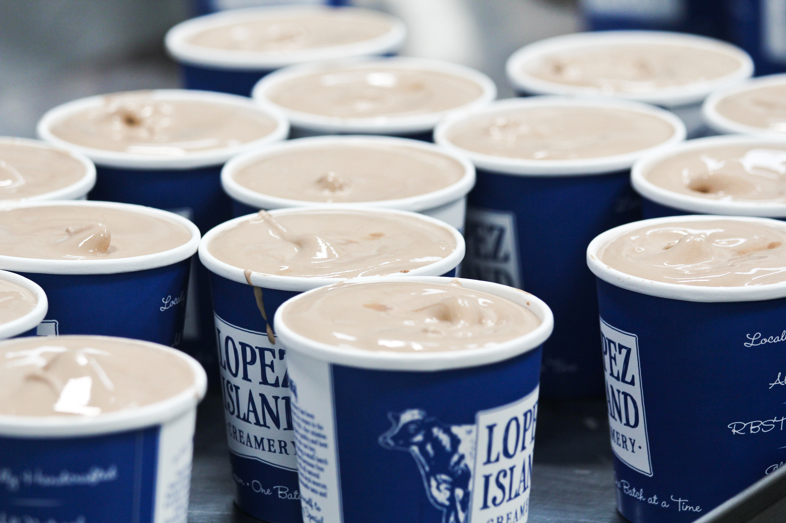

Bai tong is a Thai Cafe that has many different options and actually carries a lot of different vegan options too! My personal favorite dishes are the panang curry, pad thai, and pad ke mao! They have multiple locations but the redmond location has an absolute beautiful ambience and you can see that on the gallery page!
Lopez Island Ice Creamery
Lopez Island Ice Creamery is a washington local ice cream that I absolutely love. They often take local fruits and local seattle foods and make them into cool kinds of ice creams. My personal favorite is the Skagit strawberry, but my mom loves the mint a lot. My whole family always gets it when we are in anacortes but you can also find it in some local grocery stores like metropolitan market!
Ellenos Yogurt
Ellenos yogurt is one of the first local brands my mom and I ever tried at pike place market. Pike Place market has a lot of great local shops but Ellenos has to be my favorite. The best flvours are the marrionberry and the lemon curd becayse they seem as though they couldnt be good flavours in a yougurt but it actually is the best yogurt I have ever tasted.